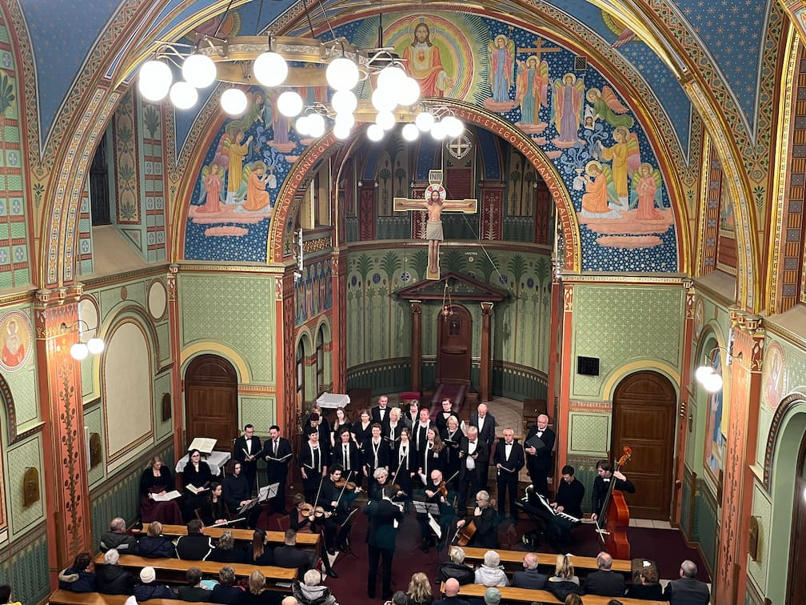

Domov jako POSKYTOVATEL SOCIÁLNÍCH SLUŽEB - podle zákona 108/2006Sb
Cílem odlehčovací pobytové služby je zajistit uživateli na přechodnou dobu bydlení a komplexní podporu, na jakou byl zvyklý doma a která mu z různých důvodů nemůže být v současné době poskytnuta rodinou nebo blízkými.
Domov má pro tuto službu vyhrazeno 13 míst. Cílová skupina jsou senioři a osoby se zdravotním postižením.

Základní nabídka služeb obsahuje:
Ubytování v tří a dvoulůžkových pokojích, celodenní stravování, úklid, praní prádla, pomoc a podpora v běžných činnostech, nepřetržitá ošetřovatelská péče, pomoc při sebeobsluze.
Na základě indikace praktického lékaře poskytujeme odbornou ošetřovatelskou péči v rozsahu stanoveného lékařem.
Každý uživatel má svého klíčového pracovníka k individuální podpoře při poskytování služeb.

K udržení tělesné i duševní kondice přispívá velkou měrou i aktivizace. Pomáhá odpoutávat pozornost uživatelů od obtíží nemoci a pokročilého věku, udržovat dobrou náladu, motivovat k pohybu, cvičit jemnou motoriku i paměť.
Pobyt uživatelů v Domově je obohacován průběžnými kulturními aktivitami a koncerty, jichž se mohou zúčastňovat i uživatelé na vozíku.
V aktivizaci uživatelů spolupracují s personálem také dobrovolníci, kteří přicházejí nabídnout svůj čas a věnují ho různým způsobem.
V neposlední řadě je péče naplňována i nabídkou duchovní služby v míře, v jaké o ni uživatel projeví zájem.

Postup při podání žádosti o odlehčovací sociální službu:
- Vytiskněte a vyplňte žádost o přijetí a přiložte aktuální lékařskou zprávu
- Dokumenty odešlete poštou na adresu Domova, na email zadost@domovrepy.cz nebo osobně zaneste na vrátnici společně s lékařskými zprávami pacienta
- Proběhne sociální šetření a zhodnocení předložených podkladů a současné kapacity
- Obdrží telefonicky či emailem rozhodnutí o přijetí a případně další informace a kontakty před nástupem